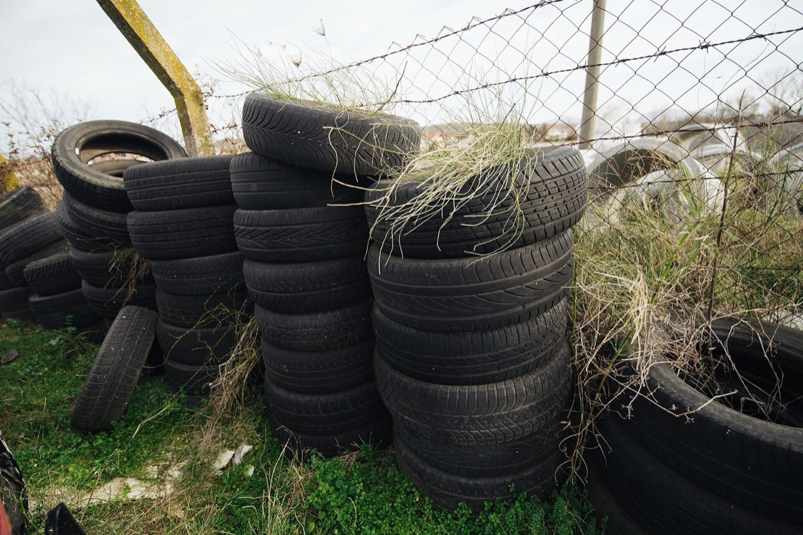

{kind=link}
Concept before capital
Site readiness, feedstock validation, environmental method, and financing are worked through before major capital deployment.
The Michigan LTC Network Resource Recovery Corridor supports funding development, documentation control, site coordination, implementation planning, compliance readiness, and training for the currently authorized project sites in Coleman and Flint, Michigan.
Tires, rail ties, biomass, and industrial materials too often end their useful life in ways that waste value and burden communities. The corridor is a structured effort to plan cleaner recovery and reuse — with the discipline, records, and controls that public agencies, funders, and host communities expect.

Site readiness, feedstock validation, environmental method, and financing are worked through before major capital deployment.
Sources, routing, approvals, assumptions, and changes are tracked in an audit-ready workspace with clear ownership.
Public statements are limited to what cited sources support. Missing information is flagged as a placeholder, never invented.
Record what is known, where it came from, and what still needs verification.
Do not state awards, endorsements, permits, emissions outcomes, jobs, revenue, investor commitments, or partner approvals without a cited source.
New sites, scope expansion, and authority changes require written documentation and routing.
Every deliverable, issue, and decision has an owner or responsible route.
Materials are organized so a reviewer can identify source support, status, and approval history.
Templates, registers, and training keep the work durable through personnel changes.
PublicLogic supports the Michigan LTC Network with governed delivery infrastructure. Its support covers:
PublicLogic's proprietary runtime concepts, reusable tooling, frameworks, methods, and templates remain PublicLogic property. Only materials explicitly authorized for this project are used in the network's workspace.